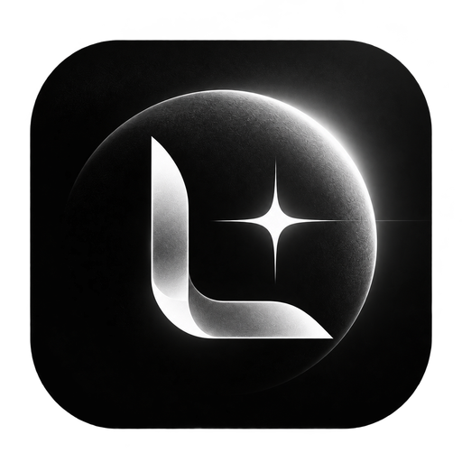

СЕЙЧАС ИГРАЕТ
Включите музыку
Выберите приложение или вкладку
0:00—:—

УПРАВЛЕНИЕ
Управляйте музыкой и поведением виджета.
Выберите приложение или вкладку
Закрытие этого окна оставит виджет работающим. Открыть Liberty Wave снова можно через значок в трее или запуск приложения.
ПОДКЛЮЧЕНИЯ
Приложение или конкретная вкладка браузера.
При ручном выборе команды останутся у этого плеера, даже если он закроется.
Браузер ещё не подключён
Установите расширение, создайте код и введите его в окне расширения. Затем обновите музыкальную вкладку.
ПЕРСОНАЛИЗАЦИЯ
Ваш цвет, размер и характер свечения.
Только звук выбранного музыкального источника. Микрофон не используется.
УДОБНОЕ УПРАВЛЕНИЕ
Работают в игре и при закреплённом виджете.
Выберите действие и нажмите своё сочетание.
Можно назначить обычные клавиши или сочетания с Ctrl, Alt, Shift, Win. NumPad не нужен. При записи бинды приостановлены; Esc отменяет запись.
ПРИЛОЖЕНИЕ
Новые возможности с сохранением настроек.
Цвет, размер, горячие клавиши и подключения браузеров сохранятся. Во время обновления музыкальный плеер продолжит работать.